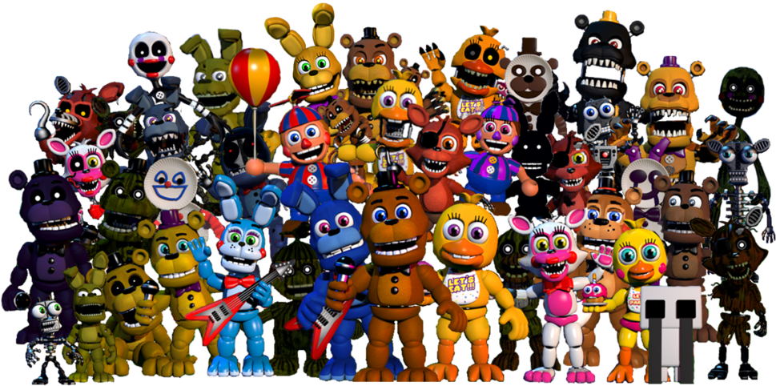
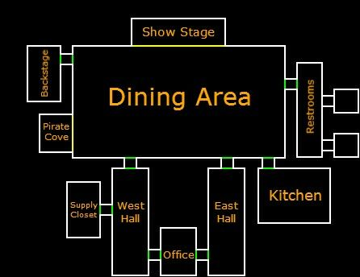

Five Nights at Freddy's Lore

Welcome to Freddy Fazbear’s Pizza
Freddy Fazbear’s Pizza is a family entertainment restaurant that appears cheerful and safe during the day, but hides a dark and disturbing history once the lights go out. The animatronic mascots that entertain children during the day are said to behave strangely and aggressively at night, creating countless rumors and urban legends.
Over the years, multiple locations of Freddy Fazbear’s Pizza have been opened and closed due to mysterious incidents, missing children reports, and unexplained malfunctions. These events became the foundation of the Five Nights at Freddy’s lore, which connects all games in a single, complex timeline.
The Dark History of Fazbear Entertainment
Fazbear Entertainment is a company that has repeatedly attempted to maintain a positive public image despite being surrounded by controversy and tragedy. Each new restaurant location seems to repeat the same cycle of incidents, leading to shutdowns and investigations that are often covered up or ignored.
The most popular theory among fans suggests that the animatronics are haunted by the spirits of missing children, which explains their hostile behavior during nighttime hours. These theories have become central to understanding the deeper story behind the franchise.
Main Animatronics
Click on each character to discover more about their role in the story.
FREDDY
Main mascot of Freddy Fazbear’s Pizza.
BONNIE
Guitarist animatronic, often seen on the left side of the stage.
CHICA
Always hungry… loves pizza.
FOXY
Hidden in Pirate Cove… until he isn’t.
Explore Freddy Fazbear’s Pizza
This map shows different areas of the restaurant. Click on specific zones to learn more.

FNAF Timeline
Fall Fest
The first known Fall Fest event takes place and becomes important in Fazbear history.
Bite of '83
The Crying Child is fatally injured by Fredbear during his birthday party, leading to the closure of Fredbear's Family Diner.
Charlotte Emily's Death
William Afton murders Charlotte outside the diner. Her soul later possesses The Puppet.
Missing Children Incident
Five children disappear inside Freddy Fazbear's Pizza and possess the animatronics.
Bite of '87
An animatronic attacks a victim, causing severe brain damage and creating one of the biggest mysteries in the series.
Five Nights at Freddy's
Michael Afton works as a night guard and survives five nights at Freddy Fazbear's Pizza.
Sister Location
Michael searches for his sister Elizabeth inside Circus Baby's Entertainment & Rentals.
FNAF 3
Springtrap is discovered inside Fazbear's Fright, a horror attraction based on old Fazbear stories.
Pizzeria Simulator
Henry Emily gathers all remaining animatronics and burns the building to end the tragedy.
Help Wanted
Glitchtrap appears inside the Fazbear virtual reality game and begins manipulating Vanny.
Mega Pizzaplex Opens
The massive Freddy Fazbear's Mega Pizzaplex becomes the newest Fazbear attraction.
Security Breach
Gregory and Glamrock Freddy uncover the dark secrets hidden beneath the Pizzaplex.
Ruin & The Mimic
Cassie enters the ruined Pizzaplex and accidentally frees the Mimic.
Listen While Exploring
The atmosphere of Five Nights at Freddy’s is heavily supported by its iconic soundtrack and ambient horror sound design. Listening to music while exploring the lore makes the experience more immersive and emotional.
Contact Fazbear Entertainment
If you have experienced any unusual activity or incidents related to Freddy Fazbear’s Pizza, please report them using the form below.
Discover More Games
Click on the icons to discover more about my favorite games from the franchise.